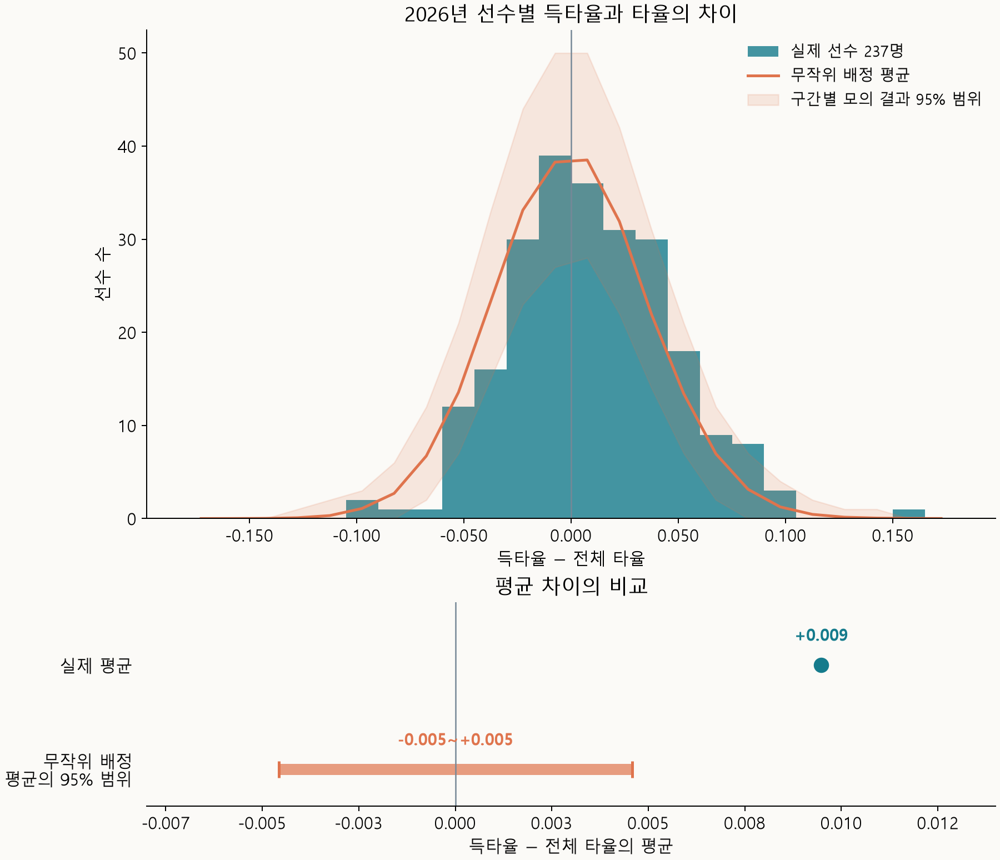
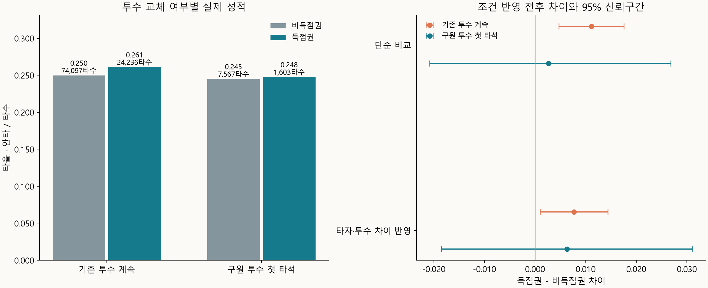
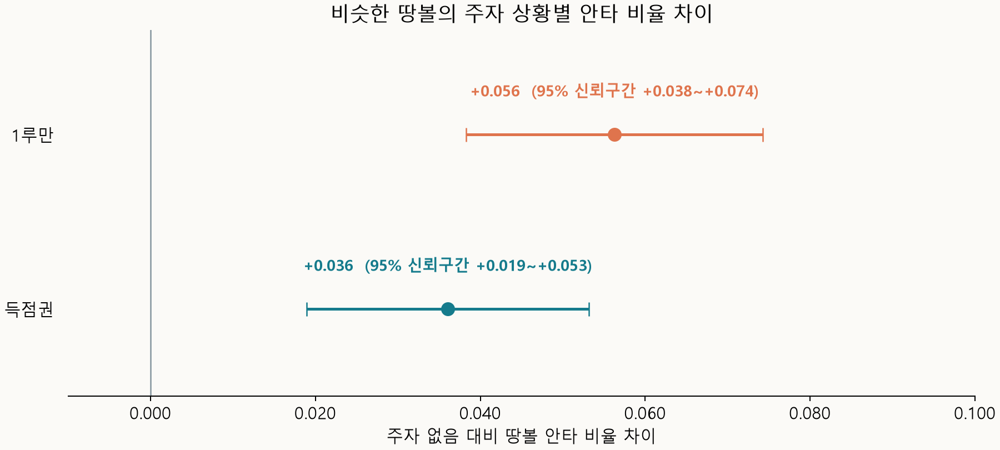

득점권 타율(득타율)과 그냥 일반적인 타율은 다른 지표가 될지 알아보자. 득점권 타율은 단지 주자가 득점권에 있을 때 수집된 타격 결과라고 생각할 수도 있다. 아니면 더 결정적일 상황일때 작용하는 타자의 성적으로 생각할 수도 있다. 주자가 득점권에 있다는 이유로 성적이 달라지는지 알아보자.
타율과 득타율의 차이
2026년 타율과 득타율 차이를 비교했다.

선수들의 차이를 평균 내면 득타율이 타율보다 0.009 높았다.
안타가 득점권에서 우연히 더 나오거나 덜 나오는 경우와도 비교했다. 이때 선수들의 평균 차이가 어느 정도까지 생길 수 있는지 살펴봤다.
| 비교 항목 | 득타율 − 전체 타율의 평균 |
|---|---|
| 실제 2026년 | +0.009 |
| 우연으로 예상한 평균 차이의 95% 범위 | −0.005~+0.005 |
실제 타율과 득타율의 차이는 있었다!
차이가 생길 수 있는 이유로 세 가지를 생각하고, 각각 따로 살펴봤다.
- 희생플라이를 타수에서 제외하는 타율 계산 방식
- 주자가 쌓일 당시의 투수 상태
- 주자에 따른 수비 위치 변화
희생플라이를 아웃으로 계산한 차이
희생플라이는 아웃이지만 타율 계산에서는 타수에 포함되지 않는다. 주자가 홈으로 들어와야 하므로 득점권에서 발생한다. 따라서 이 아웃을 빼주는 영향은 전체 타율보다 득타율이 더 높게 나타날 수 있다.
희생플라이를 일반 아웃처럼 타수에 넣어, 같은 선수들의 전체 타율과 득타율을 다시 계산했다.
| 시즌 | 기존 평균 차이 | 희생플라이를 아웃으로 계산한 평균 차이 | 계산 변경 후 95% 신뢰구간 |
|---|---|---|---|
| 2025년 | +0.012 | +0.006 | +0.001~+0.010 |
| 2026년 | +0.009 | +0.003 | −0.002~+0.008 |
득타율이 높게 나타나는 데에는 희생플라이를 타수에서 제외하는 계산 방식이 꽤 영향을 주고 있었다.
2026년에는 희생플라이를 아웃으로 계산하면, 득타율이 타율과 비슷했다. 단, 2025년에는 차이가 있었고 득점권에서는 팀배팅을 위해 희생플라이를 더 노렸을 수도 있다.
투수 상태에 따른 차이
투수 상태가 득점권 성적에 영향을 줄 수 있는지도 살펴봤다. 주자가 쌓여 있다는 것은 투수 상태가 상대적으로 좋지 않다는 신호일 수도 있다고 생각했다. 그런 투수가 계속 던진다면 뒤의 타자도 안타를 치기 쉬울 수 있다.
2026년 기존 투수가 계속 던지는 타석과 구원 투수가 등판해 처음 상대하는 타석을 비교했다.

| 상대 투수 | 비득점권 타율 | 득타율 | 득점권 − 비득점권 차이 |
|---|---|---|---|
| 기존 투수가 계속 던진 경우 | 0.250 | 0.261 | +0.011 |
| 구원 투수가 처음 상대한 타석 | 0.245 | 0.248 | +0.003 |
기존 투수가 계속 던질 때는 득점권 성적이 더 높았고, 교체 직후에는 차이가 뚜렷하지 않았다. 다만 투수 교체할때는 타자에 맞게 교체를 하니 상대적으로 투수에 유리한 상황이었다.
주자에 따른 수비 위치 변화
주자가 발생하게 되면 견제나 홈 승부를 위해 수비 위치가 달라지고 제약이 생기는 것도 득타율과 타율의 차이에 영향을 줄 수 있다. 비슷한 땅볼이지만 주자가 있을 때 더 자주 안타가 되는지 비교했다.
2026년 땅볼을 주자 없음·1루만·득점권으로 나눠 비교해보았다.

| 주자 상황 비교 | 땅볼 안타 비율 차이 | 95% 신뢰구간 |
|---|---|---|
| 1루만 − 주자 없음 | +0.056 | +0.038~+0.074 |
| 득점권 − 주자 없음 | +0.036 | +0.019~+0.053 |
비슷한 땅볼도 주자가 있을 때 더 자주 안타가 되었다. 수비 위치 변화가 영향을 줬을 가능성이 있어보인다.
마무리
2026년 선수들의 득타율은 타율보다 평균 0.009 높았지만, 희생플라이를 아웃으로 계산하면 차이는 0.003로 줄었다. 타율 계산 방식이 평균 차이의 상당 부분을 설명하고 있었다.
희생플라이를 반영한 뒤 남은 평균 차이가 우연한 변동과 뚜렷하게 구분되지 않았다. 투수가 계속 던질 때 득점권 성적은 꽤 높아졌다. 땅볼만 따로 보면, 주자가 있을 때 안타가 되는 비율은 더 높았다.
데이터 출처
MLB 공식 Stats API의 2025·2026년 정규시즌 기록을 사용했다.
땅볼의 속도·각도·타구 좌표는 Baseball Savant Statcast의 2026년 정규시즌 자료를 사용했다.